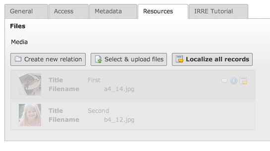

Bug #57488
page record overlays: media field not translatable
| Status: | Resolved | Start date: | 2014-04-01 | |
|---|---|---|---|---|
| Priority: | Should have | Due date: | ||
| Assigned To: | Oliver Hader | % Done: | 100% |
|
| Category: | File Abstraction Layer (FAL) | Spent time: | - | |
| Target version: | - | |||
| TYPO3 Version: | 6.2 | Is Regression: | No | |
| PHP Version: | 5.3 | Sprint Focus: | ||
| Complexity: | medium |
Description
Reproduce:
1) add some images to the media field of a page
2) translate the page
3) no localizable images from the original record show up!
{kind=link}
{kind=link}
{kind=link}
{kind=link}
{kind=link}
{kind=link}
Related issues
Associated revisions
[BUGFIX] Media field is empty on page localization
If comparing localization of regular tables (like tt_content) to
pages and its specific overlay table pages_language_overlay, the
main difference is, that regular tables are copied directly and
page translation are shown in the edit view first - without
persisting to the database and thus not having a proper uid at
this time, yet.
This means, that "localizeChildrenAtParentLocalization" in the
TCA field configuration won't have any effect.
This change brings back the IRRE localization icons for children
and "localize all" link for the media field. However, those are
only displayed if the new page overlay has been saved once.
Resolves: #57488
Releases: 6.2
Change-Id: I29886776b40accce48ce5cd10937ff65b20430fb
Reviewed-on: https://review.typo3.org/29719
Reviewed-by: Markus Klein
Reviewed-by: Wouter Wolters
Reviewed-by: Anja Leichsenring
Tested-by: Anja Leichsenring
Tested-by: Nadir S.
Reviewed-by: Frans Saris
Reviewed-by: Oliver Hader
Tested-by: Oliver Hader
[TASK] Enhance localization behavior of pages.media
With issue #57488 the pages.media field became localizable again,
however the selective approach turns out to be problematic in
terms of overlaying data in the frontend (the "mergeIfNotBlank"
settings and the like).
Thus, instead of letting the editor localize the references after
persisting the parent and having to overlay/fallback in the
frontend, now the references are already shown in the edit view
during the localization (still before being persisted).
Resolves: #58476
Releases: 6.2
Change-Id: Id6980f2a5cfea109375afce27f62cad8c101c58e
Reviewed-on: https://review.typo3.org/29839
Reviewed-by: Anja Leichsenring
Tested-by: Anja Leichsenring
Reviewed-by: Marc Bastian Heinrichs
Tested-by: Marc Bastian Heinrichs
[BUGFIX] Fix missing new record button with enabled useCombination
Also add it if a record selector is shown.
Resolves: #60370
Related: #57488
Releases: master, 6.2
Change-Id: If4f34521310dc3f479d6c97cada082db91f668c3
Reviewed-on: http://review.typo3.org/31648
Reviewed-by: Markus Klein <klein.t3@reelworx.at>
Tested-by: Markus Klein <klein.t3@reelworx.at>
Reviewed-by: Stephan Großberndt <stephan@grossberndt.de>
Reviewed-by: Stefan Froemken <froemken@gmail.com>
Tested-by: Stefan Froemken <froemken@gmail.com>
Reviewed-by: Alexander Opitz <opitz.alexander@googlemail.com>
Tested-by: Alexander Opitz <opitz.alexander@googlemail.com>
Reviewed-by: Wouter Wolters <typo3@wouterwolters.nl>
Tested-by: Wouter Wolters <typo3@wouterwolters.nl>
[BUGFIX] Fix missing new record button with enabled useCombination
Also add it if a record selector is shown.
Resolves: #60370
Related: #57488
Releases: master, 6.2
Change-Id: If4f34521310dc3f479d6c97cada082db91f668c3
Reviewed-on: http://review.typo3.org/33289
Reviewed-by: Wouter Wolters <typo3@wouterwolters.nl>
Tested-by: Wouter Wolters <typo3@wouterwolters.nl>
History
#1 Updated by Stefan Neufeind over 1 year ago
Can you maybe say if it worked in 6.0/6.1 or so?
#2 Updated by Thomas Fersterer over 1 year ago
- File media_615.jpg added
- File media_62_de.jpg added
- File media_62_en.jpg added
I can reproduce it in 6.2, in 6.1.5 it works fine.
#3 Updated by Alexander Dick over 1 year ago
Any news on this?
#4 Updated by Oliver Hader over 1 year ago
- Category changed from Localization to File Abstraction Layer (FAL)
- Status changed from New to Accepted
- Priority changed from Must have to Should have
I can confirm this misbehaviour...
#5 Updated by Oliver Hader over 1 year ago
- Complexity set to medium
I guess you're using the Page Module's "make new translation of this page", right? (see screenshot forge_57488.png)
The problem here is, that only the dokType and sys_language_uid is forwared to the edit form...
#6 Updated by Oliver Hader over 1 year ago
- File forge_57488.png added
#7 Updated by Alexander Dick over 1 year ago
- File page_record_overlay_editmode.png added
Exactly! I am using "make new translation of this page". When I'm editing an existing translation it looks like on the attached screenshot.
#8 Updated by Oliver Hader over 1 year ago
- Assigned To set to Oliver Hader
Alright, I'm investigating... I could narrow down the issue to DataPreprocessor, will check further...
The "media" field is empty if delivered from DataPreprocessor in the localization "context"...
#9 Updated by Oliver Hader over 1 year ago
Oliver Hader wrote:
Alright, I'm investigating... I could narrow down the issue to DataPreprocessor, will check further...
The "media" field is empty if delivered from DataPreprocessor in the localization "context"...
Ok, easier than that... the configuration in #52816 just was set from TRUE to FALSE 'showPossibleLocalizationRecords' => FALSE,
'showRemovedLocalizationRecords' => FALSE,
'showSynchronizationLink' => FALSE,
#10 Updated by Gerrit Code Review over 1 year ago
- Status changed from Accepted to Under Review
Patch set 1 for branch master of project Packages/TYPO3.CMS has been pushed to the review server.
It is available at https://review.typo3.org/29719
#11 Updated by Oliver Hader over 1 year ago
I just could come up with a work-in-progress solution (maybe it turns out to be fine in the end).

Thus, the IRRE localization behaviour has been re-added for pages_language_overlay.media field.
If the record is new in the edit view, the "localize all records" is not shown since the new overlay record does not have a proper uid value, yet.
This is the major difference if compared to the bahaviour with tt_content elements - those are copied/localized directly and thus the file reference can be copied along as well ("localizeChildrenAtParentLocalization" in the TCA behaviour section).
Please test the linked patch from review.typo3.org (even it is work-in-progress) and gimme some feedback. Thanks!
#12 Updated by Oliver Hader over 1 year ago
- File forge_57488_wip.png added
#13 Updated by Oliver Hader over 1 year ago
- File deleted (
forge_57488_wip.png)
#14 Updated by Oliver Hader over 1 year ago
- File forge_57488_wip.png added
#15 Updated by Alexander Dick over 1 year ago
Thanks Oliver, the patch works! :)
#16 Updated by Gerrit Code Review over 1 year ago
Patch set 2 for branch master of project Packages/TYPO3.CMS has been pushed to the review server.
It is available at https://review.typo3.org/29719
#17 Updated by Gerrit Code Review over 1 year ago
Patch set 3 for branch master of project Packages/TYPO3.CMS has been pushed to the review server.
It is available at https://review.typo3.org/29719
#18 Updated by Alexander Dick over 1 year ago
Is there a language overlay/fallback for those fields?
config.sys_language_mode = content_fallback; 1,0
config.sys_language_overlay = 1
With these settings I would expect the records of the default language to show up when they are not translated in the current language. Currently no records show up.
As soon as I localize them, they show up.
#19 Updated by Oliver Hader over 1 year ago
Thanks for testing and your feedback on this. That's a good catch!
If a localized page is used, the reference pointer used "pages_language_overlay" to lookup accordant references in table "sys_file_references", see
https://git.typo3.org/Packages/TYPO3.CMS.git/blob/HEAD:/typo3/sysext/frontend/Classes/ContentObject/FilesContentObject.php#l94
- fetch references for pages_language_overlay for the "_LOCALIZED_UID" value
- if there are no references in the overlay, fallback to references pointing pages and the "uid" value
Since this is still hardcoded, a similar method like in PageRepository::shouldFieldBeOverlaid() is required for this case (e.g. "l10n_mode" = "exclude" or "mergeIfNotBlank").
There are some more things to be done concerning overlays and fallbacks, thus I'd opt to create a separate FAL issue here.
#20 Updated by Gerrit Code Review over 1 year ago
Patch set 4 for branch master of project Packages/TYPO3.CMS has been pushed to the review server.
It is available at https://review.typo3.org/29719
#21 Updated by Oliver Hader over 1 year ago
The overlay behavior part can be found in a separate issue #58352
Thus, if you'd like to test the backend behavior and frontend output you should cherry-pick those two patches.
#22 Updated by Oliver Hader over 1 year ago
- Status changed from Under Review to Resolved
- % Done changed from 0 to 100
Applied in changeset a13a45454c6c7285e00c0ad11f3a6025ddd4bca0.
#23 Updated by Herbert Sojnik 19 days ago
Is this feature not included in TYPO3 6.2.14?
I checked the code of typo3/sysext/frontend/Configuration/TCA/pages_language_overlay.php and here are the modifications beginning in line 158 missing.
Thanks for info.
#24 Updated by Markus Timtner 7 days ago
I can confirm this - the changes in pages_lanmgauge_overlay.php are at least missing in the source for 6.2.10, too.